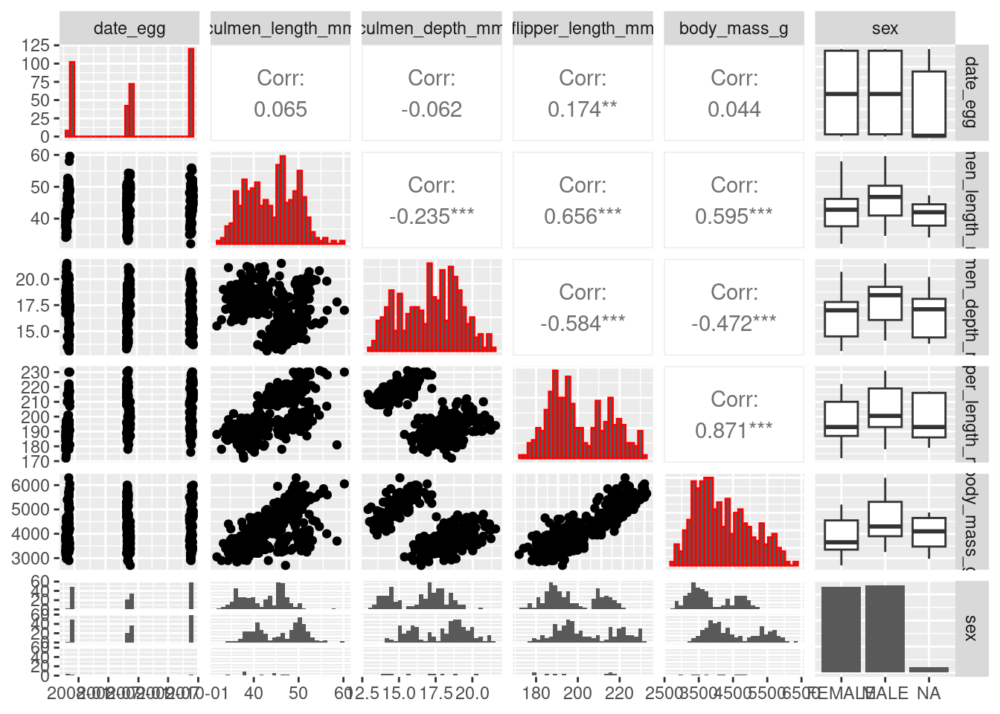

study_name sample_number species region
Length:344 Min. : 1.00 Length:344 Length:344
Class :character 1st Qu.: 29.00 Class :character Class :character
Mode :character Median : 58.00 Mode :character Mode :character
Mean : 63.15
3rd Qu.: 95.25
Max. :152.00
island stage individual_id clutch_completion
Length:344 Length:344 Length:344 Length:344
Class :character Class :character Class :character Class :character
Mode :character Mode :character Mode :character Mode :character
date_egg culmen_length_mm culmen_depth_mm flipper_length_mm
Min. :2007-11-09 Min. :32.10 Min. :13.10 Min. :172.0
1st Qu.:2007-11-28 1st Qu.:39.23 1st Qu.:15.60 1st Qu.:190.0
Median :2008-11-09 Median :44.45 Median :17.30 Median :197.0
Mean :2008-11-27 Mean :43.92 Mean :17.15 Mean :200.9
3rd Qu.:2009-11-16 3rd Qu.:48.50 3rd Qu.:18.70 3rd Qu.:213.0
Max. :2009-12-01 Max. :59.60 Max. :21.50 Max. :231.0
NA's :2 NA's :2 NA's :2
body_mass_g sex delta_15_n_o_oo delta_13_c_o_oo
Min. :2700 Length:344 Min. : 7.632 Min. :-27.02
1st Qu.:3550 Class :character 1st Qu.: 8.300 1st Qu.:-26.32
Median :4050 Mode :character Median : 8.652 Median :-25.83
Mean :4202 Mean : 8.733 Mean :-25.69
3rd Qu.:4750 3rd Qu.: 9.172 3rd Qu.:-25.06
Max. :6300 Max. :10.025 Max. :-23.79
NA's :2 NA's :14 NA's :13
comments
Length:344
Class :character
Mode :character
Visualisation and correlation check
library(GGally)
Registered S3 method overwritten by 'GGally':
method from
+.gg ggplot2
`stat_bin()` using `bins = 30`. Pick better value with `binwidth`.
`stat_bin()` using `bins = 30`. Pick better value with `binwidth`.
`stat_bin()` using `bins = 30`. Pick better value with `binwidth`.
`stat_bin()` using `bins = 30`. Pick better value with `binwidth`.
`stat_bin()` using `bins = 30`. Pick better value with `binwidth`.
`stat_bin()` using `bins = 30`. Pick better value with `binwidth`.
`stat_bin()` using `bins = 30`. Pick better value with `binwidth`.
`stat_bin()` using `bins = 30`. Pick better value with `binwidth`.
`stat_bin()` using `bins = 30`. Pick better value with `binwidth`.
`stat_bin()` using `bins = 30`. Pick better value with `binwidth`.

There is a high correlation observed between body_mass_g and flipper_length. So, I opt to remove the one of the two variables. I am removing the body_mass_g variable from the dataset.
Data wrangling
penguins = data %>%mutate (id =row_number(),species =word (species, 1),culmen_length_mm =scale(culmen_length_mm),culmen_depth_mm =scale(culmen_depth_mm),flipper_length_mm =scale(flipper_length_mm) ) %>%select (id, species, island, sex, culmen_length_mm, culmen_depth_mm, flipper_length_mm) %>%drop_na (sex)summary(penguins)
id species island sex
Min. : 1.0 Length:333 Length:333 Length:333
1st Qu.: 90.0 Class :character Class :character Class :character
Median :173.0 Mode :character Mode :character Mode :character
Mean :174.3
3rd Qu.:259.0
Max. :344.0
culmen_length_mm.V1 culmen_depth_mm.V1 flipper_length_mm.V1
Min. :-2.1653537 Min. :-2.0514400 Min. :-2.0563073
1st Qu.:-0.8099390 1st Qu.:-0.7854846 1st Qu.:-0.7762357
Median : 0.1058817 Median : 0.0753651 Median :-0.2784301
Mean : 0.0129796 Mean : 0.0069350 Mean : 0.0036811
3rd Qu.: 0.8568547 3rd Qu.: 0.7843001 3rd Qu.: 0.8594113
Max. : 2.8716604 Max. : 2.2021701 Max. : 2.1394829
The NA’s are dropped. ID is added to each row. The variables culmen_length_mm, culmen_depth_mm and flipper_length_mm are scaled. We will use PCA analysis to reduce the dimensionality of the dataset. We will only use culmen_length_mm, culmen_depth_mm and flipper_length_mm for the K-means clustering and PCA.